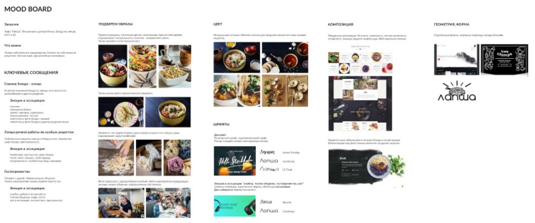

Мой Справочник | WEB-DESIGN | Moodboard
Что должно быть на moodboard-е:
Мудборд должен отражать визуальную концепцию, цвета, шрифты, общее настроение сайта
- ОБЩАЯ ИНФОРМАЦИЯ в виде текста (Компания,продукт или услуги, ЦА, трэнды и стиль, приближенные к ЦА)
- ЦВЕТ (3 основных цвета: светлый, тёмный и акцентарный)
- ИЗОБРАЖЕНИЯ
- ТИПОГРАФИКА
- ЛОГО и ФИРМЕННЫЙ СТИЛЬ компании (если таковой имеется, то дизайн не должен противоречить ФС компании)
-
РЕФЕРЕНСЫ Можно смотреть новые трэнды, черпать вдохновение и "подворовывать" уже реализованные дизайны на сервисах
pinterest.ru,
behance.net и
dribbble.com
99% дизайна уже есть в готовой реализации, не изобретайте велосипед!
Дизайн-концепции:
-
ПЛОСКИЙ (FLAT)
- Минимализм, пространство, свет
- Легко кастомизируется, можно примешивать черты других концепций
- Дизайн без дизайна (когда дизайн не должен отвлекать)
- Дизайн для админок, документации
- Тренд с времен появления Windows 10
- Часто в светлых тонах, белый фон
- materializecss.com - Materializecss
- getbootstrap.com - Bootstrap
-
СТРОГИЙ
- Выдерженный бизнес-стиль в трогих цветах
- Хорошо читабельная типографика
- Акцент на контенте
-
ГЛАМУР
- Журнальный, женский стиль (должен вызвать ассоциации как при пролистывании журнала)
- Много фотографий, большие заголовки, чёрный фон имеет место быть, полосы
- Должен выглядеть красиво с точки зрения женской половины
- Салоны красоты, женская одежда, парикмахерские, парфюм, косметика, фитнес, цветы и т.д.
-
ЯРКИЙ "вырви глаз"
- Преобладают резкие, яркие, смелые и токсичные насыщенные цвета, градиенты, декоративные элементы (волны, линии и т.д.)
- Подходит для чего-то супернового и модного (реклама электронного товара или гаджета, спорт, кроссовки, музыка, концептуальный эвент)
- Супер-привлечение внимания
- Для молодой продвинутой ЦА
-
КРЕАТИВ
- Большое количество анимаций и интерактивности
- Сложный и долгоразрабатываемый
